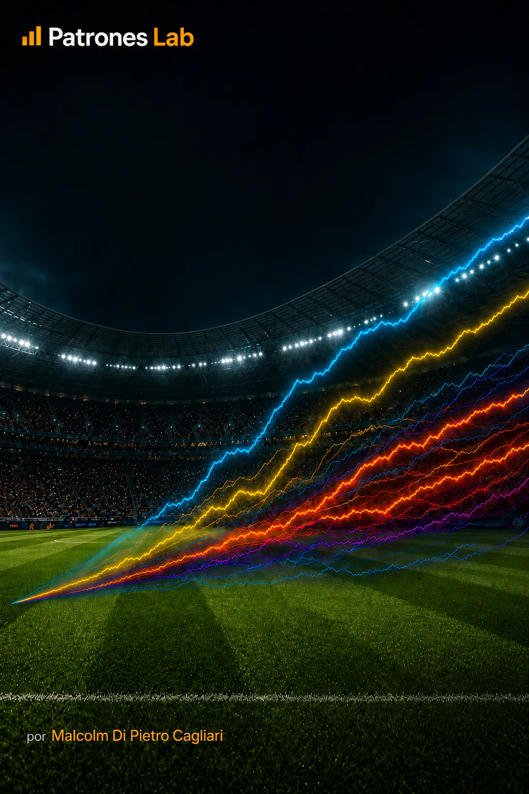

SPORTS ANALYTICS · PROJECT 18

Project 15 · Football Analytics
Monte Carlo Simulation · 2026 World Cup Predictions
Simulation of one million 2026 World Cup scenarios using Elo ratings from eloratings.net to estimate the probability of reaching the semifinals, playing the final and becoming champion.
CONTEXT AND OBJECTIVE
Build a probabilistic model to estimate how the decisive stage of the 2026 World Cup may unfold, incorporating each national team’s relative strength and the actual knockout bracket structure.
The objective is not to assert a single outcome, but to quantify uncertainty through comparable probabilities across teams and tournament stages.
MODEL AND DIAGNOSIS
- The inputs combine 32 national teams and 31 bracket matches with Elo ratings from eloratings.net dated July 2, 2026, together with checks for duplicates, missing values and unmatched teams.
- Each match probability is calculated from the Elo rating difference using the standard logistic function of the Elo system.
- The model runs 1,000,000 tournament simulations with a reproducible random seed; observed results are fixed and the remaining path is projected from the quarterfinals to the champion.
- Outputs consolidate probabilities of reaching the semifinals, playing the final and winning the tournament, along with comparative visualizations using a consistent editorial style.
DELIVERY AND LEARNING
The delivery connects data preparation, Elo probabilities, Monte Carlo simulation and visualization to transform a knockout bracket into a reproducible probabilistic reading.
The development is published on GitHub with the input file, both notebooks and the prediction visuals; the project summary is also available on LinkedIn.